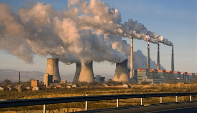

November 2015 Last Updated at 20:23
Pollution to spread across Russia
Environmental activists from across Russia surrounding pollution in their respective regions and what needs to be done in order to normalize the environmental situation in Russia.
Why are pollution levels so high?
Saharan dust visible on cars
How did Saharan dust reached the UK?
What will pollution do to us?
Air pollution is a 'serious issue'